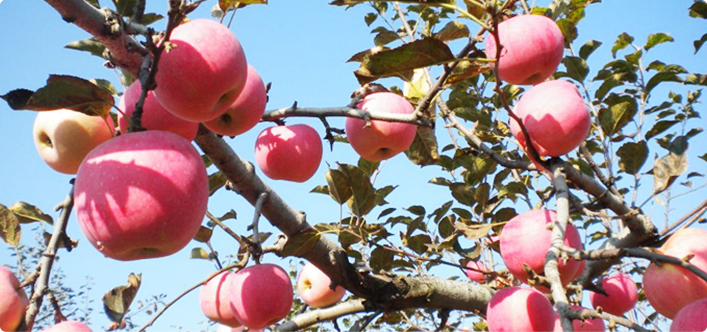
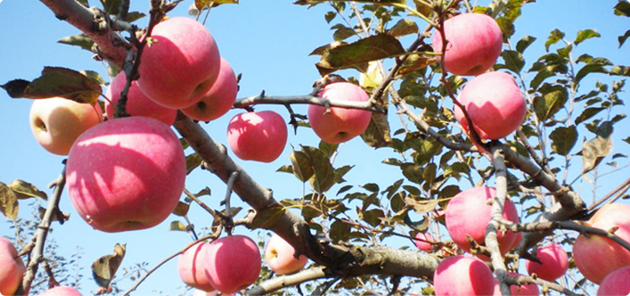

内容页
陕西洛川，人称“苹果之乡”
来源：延安旅游集团编辑部 发布日期：2016-5-20
洛川苹果，具有品质优良，果形优美，个大均匀，果面洁净，色泽艳丽，肉质脆密，含糖量高，香甜可口，硬度适中，耐贮藏等特点。洛川县被列为中国苹果外销的重要生产基地之一。
分布洛川苹果甲天下，集中产于渭北黄土高原，以洛川为中心的延安、铜川、渭南、咸阳诸市一带。果园分布，绵延千里。洛川和渭北高原的气候、土壤和地理位置，与生产优质苹果的生态环境完全吻合，属全世界最佳苹果优生区，已列为陕西和全国苹果生产基地。品种洛川苹果优良品种多达47种，其中尤以红星、红元帅、红冠、红富士、国光、秦冠、黄元帅等最优。 
分布洛川苹果甲天下，集中产于渭北黄土高原，以洛川为中心的延安、铜川、渭南、咸阳诸市一带。果园分布，绵延千里。洛川和渭北高原的气候、土壤和地理位置，与生产优质苹果的生态环境完全吻合，属全世界最佳苹果优生区，已列为陕西和全国苹果生产基地。品种洛川苹果优良品种多达47种，其中尤以红星、红元帅、红冠、红富士、国光、秦冠、黄元帅等最优。 